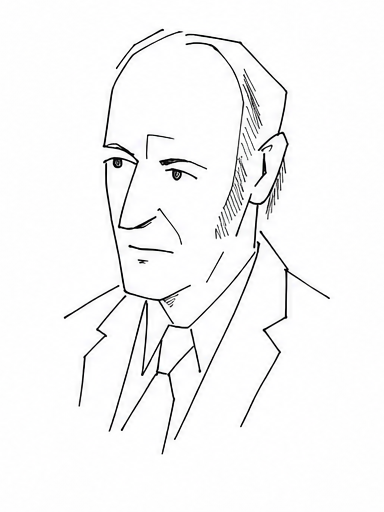

Chapter 4 Instructions about instructions
The seventh digit is taking its time. Six digits have appeared, the worker is still busy, and the supply of scratch paper is diminishing at a reassuring rate. We can see work being done. We cannot see whether it is getting anywhere. For long division we had a reason to wait: after at most nine successful subtractions, the next digit would be ready. An unfamiliar instruction sheet owes us no such courtesy.
This is awkward for our decimal game. To disagree with a digit, we need it to arrive. Waiting another hour does not distinguish a slow calculation from one that will spend eternity making preparations. Perhaps we could read the sheet instead. A jump back to the same jump is easy to diagnose. A more elaborate sheet might take a more elaborate diagnosis. Could we give a second worker directions for settling every case?
Let us ask for something definite. Our inspector receives a valid program, started without incoming data, and must eventually answer one of two questions: does it stop, or does it continue forever? The inspector must finish its inspection even when the inspected program does not finish its work. Merely running the program and watching it will settle the first possibility. It leaves us rather overqualified for the second: we already know how to wait.
There is a tempting way to embarrass such an inspector. When it says “stops,” start an endless loop; when it says “continues forever,” stop. Those responses are easy to write. The difficulty is getting the verdict to concern the very program that will respond. If the inspector predicts what one sheet does and another sheet does the opposite, nothing has gone wrong. We need to bring the description of the responding sheet within its own reach.
At present a sheet governs the worker’s actions. It can also become an object on the desk. Write
Halt on a scrap and ask someone to copy it ten times. There is no reason for the copying to stop after the first word. The directions being obeyed say to copy; the direction being copied is just ink. This distinction is available to our worker too, provided we write the copying directions carefully enough.
Here is a small sheet to put under inspection:
0: Write(A,7) 1: Move(A,0,1,0) 2: Halt
Following it puts a 7 in the square on card
A, moves the card one square right, and stops. Copying it produces three lines, including the line that says to stop. A copier saves the place just beyond the supplied text and works toward it. Spaces, punctuation, and line breaks are copied along with the other characters. An empty square inside the text cannot be mistaken for the end of the job.
We can go further than copying. Suppose we keep an account of what would happen if the supplied sheet were followed. At the beginning, card
A points to its starting square and the paper is blank. After the first instruction, the account says that this square contains 7. After the second, it says that the card points one square farther right. The entry for the 7 stays where it was:
| Next instruction | Position on \(A\) | Written marks |
Write(A,7) |
starting square | none |
Move(A,0,1,0) |
starting square | 7 in that square |
Halt |
one square to the right | 7 in the starting square |
Now replace the last line with a small test:
2: If(A,7) Goto 4 3: Write(A,8) 4: Halt
At line 2, the card points to a blank square. The test fails, line 3 writes 8, and the finished row reads 78. Looking at the square the card used to indicate would give the wrong answer. Keeping track of the place is part of following the instruction, just as it was when we carried a 1 into the next column of an addition.
The account itself may sit anywhere. We can write “7 at \((0,0,0)\)” halfway down page twelve without transporting the original 7 to page twelve. A move changes the recorded address on a card; a write changes the recorded mark at an address. The record contains the configuration of the supplied computation, and each update must preserve everything the instruction leaves alone.
This is a simulation. One fixed worker can perform it for different supplied programs by looking up the next instruction and making the appropriate update. At any finite stage the record is finite, so looking through it takes finite work. The machine appendix gives the scans and updates. We call the resulting procedure
Run. If the supplied program stops, Run returns its result; if it continues, Run continues following it. Simulation gives us a way to use a sheet as input. It has not yet given us a way to predict its future.
To get the program’s own sheet into the calculation, we will first make sheets for somebody else. The word
MATH is a manageable customer. A printer for it writes M, moves right, writes A, moves right, writes T, moves right, writes H, and stops:
Write(OUT,M) Move(OUT,0,1,0) Write(OUT,A) Move(OUT,0,1,0) Write(OUT,T) Move(OUT,0,1,0) Write(OUT,H) Halt
Here
OUT begins at the result row. The letters come from the instructions, so this printer returns MATH whatever incoming word it is given.
Now put
MATH on an input row and ask a different worker to prepare those instructions. The worker reads M and writes the command for writing M, followed by the command for moving right. The next letter supplies the next writing command. At the end it finishes the sheet with a halt. Given CAT, the same preparation would produce a printer for CAT. Nothing in this job requires running the printer it has made.
We shall call the preparation
Print. The name needs a little care: Print(MATH) is a sheet of instructions. Running that sheet returns the four letters. The distinction becomes useful when the incoming text is itself a whole program. Print then builds a printer for all its characters, including its commands, spaces, and final halt. When the printer runs, those characters are returned as text. Only the printer’s own instructions are obeyed.
There is one other preparation to make. Put the MATH printer beside a program that copies its input and appends an exclamation mark. We want a single sheet that runs the printer first and passes the returned word to the exclamation program. Running that combined sheet gives
\begin{equation*}
\texttt{MATH}\quad\longrightarrow\quad\texttt{MATH!}.
\end{equation*}
The preparation, called
Combine(p,q), takes two program texts, \(p\) and \(q\text{.}\) It copies them into fixed surrounding directions: run the first; give its result to the second; return the second result. The copying finishes even if one of the supplied jobs never will. In that case the finished sheet is a finite set of directions for a very long engagement.For example, let the first job simply halt, and the second jump back to itself. We can assemble them, set down our pencil, and go away. Someone who later follows the assembled sheet will reach the second job and stay there. Preparing the work and doing the work are separate events. Appendix C assembles this example down to its punctuation.
The punctuation matters because we will need the same sheet, not merely another sheet that behaves similarly. Fix one convention for every space, copied character, and instruction label. Under that convention, repeating
Print or Combine with the same inputs produces exactly the same text. Their elementary expansions are fixed as well. We have three distinct jobs now: Print makes a printer; Combine joins two jobs; Run does the work described by a supplied sheet.
Alonzo Church studied calculation by manipulating expressions. His student Stephen Kleene found that such manipulations could bring a program’s own description into its work. Our inspector has made this sound like an exotic requirement. The materials are the copying and assembly we have just performed.
First aim for something apparently simpler: a program that returns its own complete text. Writing “copy this program” begs the question. We have no instruction that points to this. Including a literal copy of the whole sheet seems to demand a copy containing the copy, which contains the copy. We can avoid starting that pile by making one ordinary preparation and using it twice.
Take a white sheet. It receives a program text and prepares a package with two parts. The first part prints the supplied text. The second part is that supplied text, to be run as a program on what the first part returns. In the notation we have earned, white performs
\begin{equation*}
D(n)=\texttt{Combine}(\texttt{Print}(n),n),
\end{equation*}
where \(n\) is the incoming program text. White returns the package. It does not run it.
Try white on our exclamation program. The package white makes would first print the exclamation program’s instructions, then give those instructions to the exclamation program. Its result would be the instruction text with an extra exclamation mark. The program has received its text from the printer in front of it. White did nothing more mysterious than make that printer and put the two jobs together.
White’s own directions are a finite text too. Finish writing them, then supply that complete text to white. Save the package it makes on a blue sheet. Blue therefore contains these two jobs:
| First supplied text | Second supplied text |
Print(white text) |
The white text itself |
We have already completed one calculation: white, given white, made blue. Now run blue and put its result on a green sheet. Its first job returns white’s text. Its second job runs white with exactly that text as input. But white given white is the calculation we just completed. It prepares blue.
Green consequently receives every character of blue. The text being returned is the text of the running program. Blue includes both jobs, all their surrounding directions, and the literal material they use; the reconstruction returns all of it. Here is the route again, with the colours kept in place:
\begin{equation*}
\begin{array}{rcl}
\text{white, given white}&\longrightarrow&\text{blue},\\[3pt]
\text{blue's first job}&\longrightarrow&\text{white},\\[3pt]
\text{blue's second job, given white}&\longrightarrow&\text{blue}.
\end{array}
\end{equation*}
Nothing tells the worker to run the newly returned blue sheet. It has returned a result and can stop. Self-reproduction need not be an incurable condition.
Such a program is called a quine. If \(b\) denotes the white text, the blue text is \(D(b)\text{.}\) Running blue runs white on \(b\text{,}\) and white returns \(D(b)\text{.}\) The notation lets us check that the two occurrences of blue really are identical: the same preparation has received the same input. No instruction had to recognize itself.
Now we can put the recovered description to use. Suppose we want the running program to count its own characters. Change white so that, after preparing the package, it counts the characters in that package and returns the count. To make a new blue sheet, use the original package-making operation \(D\text{:}\) prepare a printer for the changed white text, then combine that printer with the changed white program. This assembly copies the text without executing it. Running changed white at this point would return a count, which would make a poor instruction sheet.
Now run new blue. Its first job supplies the changed white text; its second runs changed white on that text. White reconstructs precisely the new blue package and counts its characters. The instructions for doing the counting are included in what gets counted. We do not need to guess the final length and then revise the guess because writing it down has made the program longer.

Stephen Kleene (1909–1994)
Counting is just one possible use of the recovered text. Any mechanical task that accepts a program description can be put in that place. This is the form of Kleene’s recursion theorem we need: we can construct a program that performs the chosen task on its own complete description.
Let the chosen task be \(T\text{.}\) White still prepares a printer for its input and combines that printer with the input program. Instead of returning the package, it gives the package to \(T\text{:}\)
Call Print(INPUT, printer) Call Combine(printer, INPUT, package) Call Task(package, RESULT) Halt
The named calls stand for the corresponding paper procedures. A call returns to the following line if its job finishes. The first two prepare text; only the third carries out the chosen task on that text. If the task never finishes, white never reaches its halt.
Call this finished white text \(b_T\text{.}\) Make blue in the original way, as \(D(b_T)\text{,}\) and call that blue text \(r\text{.}\) On running blue, its printer supplies \(b_T\text{.}\) White then prepares \(D(b_T)\text{,}\) which is \(r\text{,}\) and gives it to \(T\text{.}\) Thus the complete running program performs \(T\) on \(r\text{,}\) its own description. All the preparation ends before \(T\) begins. It adds work and scratch paper but no permanent decimal digits; afterward the resulting program has the same returned result or permanent output as \(T\) on that description.
We can finally submit the right sheet to our inspector. Choose \(T\) to request an inspection of its incoming program text and then respond contrariwise. Write Y for a predicted halt and N for a predicted endless run:
Call Inspect(INPUT, answer) If(answer,Y) Goto Forever Halt Forever: Goto Forever
Kleene gives us a complete program that performs this task on its own text. The inspector’s promise includes this program: it is a valid finite sheet, starting without incoming data, just like the other sheets it agreed to inspect.
Suppose the answer is Y. The program follows the jump and loops forever, making the answer wrong. Suppose the answer is N. It reaches its halt, again making the answer wrong. The inspector has promised to finish, so withholding an answer is not a third way to keep its promise. Both permitted answers fail for the very program they describe.
The contrary responses did not require ingenuity. The work was in arranging that the verdict reached its own subject. If a universal inspector existed, we could copy its directions into this construction and obtain a case it could not correctly settle. Hence it cannot exist. This is the halting problem: no mechanical method always finishes and correctly decides whether any supplied program will stop.
We have lost a universal method, not our ability to reason about particular sheets. A write followed by a halt stops; a jump back to itself does not. Nor does allowing incoming data repair the inspector. To ask about a particular program with a particular input, prepare a printer for that input and follow it with the program. The combined sheet contains the data and starts without any.
One direction of inspection still works: simulate the program and announce its halt if it reaches one. Every actual halt will eventually be announced. No corresponding moment arrives at which an endless computation has finished demonstrating that it is endless.
Return to the seventh digit. Given any program, make a new sheet that simulates it on private paper and writes a 7 only when that simulation halts. Someone who could always decide whether the 7 will appear could always decide whether the original program halts. Our missing-digit inspector is therefore impossible too. The unsettled work on the scratch pages has a direct effect on what we can know about the answer row.
We can hide it more effectively by keeping that row busy. Begin a decimal with \(0.\text{.}\) Before each simulated working step, append a zero. If the simulation reaches its halt, append a single 1 and then zeros forever. Here a working step is one taken before reaching the halt instruction. A simulation with two such steps produces
\begin{equation*}
0.0010000\ldots;
\end{equation*}
one with five produces
\begin{equation*}
0.0000010000\ldots.
\end{equation*}
If it never halts, the row is all zeros. The simulation’s own marks remain on its private pages; none is passed off as part of this decimal. Each simulated step involves a finite record and finishes, so in every case this new printer supplies every requested digit after finite work.
Set it beside the printer that writes zeros forever. The two numbers are equal exactly when the simulated program never halts. If it halts, the solitary 1 makes the first number positive, however far out that 1 appears. A method that always decided whether these productive printers name the same real number would therefore decide the halting problem.
Watch them for a while. Zero agrees with zero, then another zero agrees with another zero. Nothing is delayed. Each successful comparison is real evidence about that place and remarkably little help with the places still to come. The possible 1 can wait beyond every place we have checked. We have repaired the interruption in the printing without repairing the difficulty of knowing what the whole decimal is.
We could respond to a halt by starting the growing-gap decimal instead. Then the number would be zero if the simulation ran forever, and irrational if it stopped. The workshop follows that variation and the related problem of recognizing endless decimal printers. For the equality question, a single possible 1 has already done all the damage required.
There is also a decimal in which each place asks its own halting question. List all valid program texts together with all finite inputs, using the length-and-alphabetical ordering of finite writing. The grammar can be checked without settling whether a program will halt. Put a 1 in place \(n\) if the \(n\)th program-and-input pair halts, and a 0 there if it does not. This defines
\begin{equation*}
H=0.h_1h_2h_3\ldots.
\end{equation*}
We have listed the questions and specified what their answers mean. We have not found a procedure for obtaining the answers.
Suppose nevertheless that a program prints \(H\text{.}\) For the twentieth halting question, wait for its twentieth digit. For the millionth, wait for its millionth. Every one of these particular waits must finish, because this is supposed to be a printer for the whole decimal. Reading the appropriate digit would then supply the universal inspection we have proved impossible. Thus no program prints \(H\text{.}\)
Could the same real have a second decimal name that is easier to print? Our ambiguity between a tail of zeros and a tail of nines does not help here. There are no nines in \(H\text{,}\) and there are infinitely many ones: even one immediately halting program, paired with all the different finite inputs, supplies infinitely many halting pairs. Its expansion is neither eventually zero nor eventually nine. This real has only the one decimal name, and that name cannot be printed by a finite program.
Baire gave us room outside a proposed list. Here is a particular occupant, defined using the very programs from which we hoped to make our list. Every digit has a precise mathematical meaning. What we cannot have is one finite sheet that keeps writing those meanings down as zeros and ones.
For an individual question, a proof might still succeed where watching a calculation fails. We can show that the jump back to itself runs forever by reading its one instruction. We do not have to watch the eternity it describes. A worker could search through proofs, looking for an answer about its own work. Proofs are finite writing; our programs have learned to read finite writing. We should now ask what happens when the conclusion becomes an instruction’s input.
![Runestone Academy logo]()
![MathJax logo]()